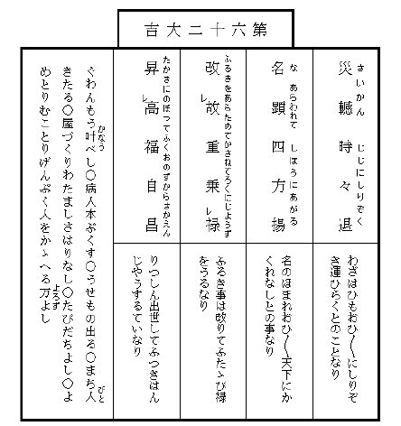

| すみだ川 | |
| 永井 荷風 | |
| (2012) | |
すみだ川
永井荷風
俳諧師
松風庵蘿月
は今戸
で常磐津
の師匠
をしている実
の妹をば今年は盂蘭盆
にもたずねずにしまったので毎日その事のみ気にしている。しかし日盛
りの暑さにはさすがに家
を出かねて夕方になるのを待つ。夕方になると竹垣に朝顔のからんだ勝手口で行水
をつかった後
そのまま真裸体
で晩酌を傾けやっとの事膳
を離れると、夏の黄昏
も家々で焚
く蚊遣
の烟
と共にいつか夜となり、盆栽
を並べた窓の外の往来には簾越
しに下駄
の音職人
の鼻唄
人の話声がにぎやかに聞え出す。蘿月は女房のお滝
に注意されてすぐにも今戸へ行くつもりで格子戸
を出るのであるが、その辺
の涼台
から声をかけられるがまま腰を下
すと、一杯機嫌
の話好
に、毎晩きまって埒
もなく話し込んでしまうのであった。
朝夕がいくらか涼しく楽になったかと思うと共に大変日が短くなって来た。朝顔の花が日ごとに小さくなり、西日が燃える焰のように狭い家中
へ差込んで来る時分
になると鳴きしきる蟬
の声が一際
耳立
って急
しく聞える。八月もいつか半
過ぎてしまったのである。家の後
の玉蜀黍
の畠に吹き渡る風の響
が夜なぞは折々
雨かと誤
たれた。蘿月は若い時分したい放題身を持崩
した道楽の名残
とて時候の変目
といえば今だに骨の節々
が痛むので、いつも人より先に秋の立つのを知るのである。秋になったと思うと唯
わけもなく気がせわしくなる。
蘿月は俄
に狼狽
え出し、八日頃
の夕月がまだ真白
く夕焼の空にかかっている頃から小梅瓦町
の住居
を後
にテクテク今戸をさして歩いて行った。
堀割
づたいに曳舟通
から直
ぐさま左へまがると、土地のものでなければ行先
の分らないほど迂回
した小径
が三囲稲荷
の横手を巡
って土手へと通じている。小径に沿うては田圃
を埋立
てた空地
に、新しい貸長屋
がまだ空家
のままに立並
んだ処もある。広々した構えの外には大きな庭石を据並
べた植木屋もあれば、いかにも田舎
らしい茅葺
の人家のまばらに立ちつづいている処もある。それらの家
の竹垣の間からは夕月に行水
をつかっている女の姿の見える事もあった。蘿月宗匠
はいくら年をとっても昔の気質
は変らないので見て見ぬように窃
と立止るが、大概はぞっとしない女房ばかりなので、落胆
したようにそのまま歩調
を早める。そして売地や貸家の札
を見て過
る度々
、何
ともつかずその胸算用
をしながら自分も懐手
で大儲
がして見たいと思う。しかしまた田圃づたいに歩いて行く中水田
のところどころに蓮
の花の見事に咲き乱れたさまを眺め青々した稲の葉に夕風のそよぐ響をきけば、さすがは宗匠だけに、銭勘定
の事よりも記憶に散在している古人の句をば実に巧
いものだと思返
すのであった。
土手へ上
った時には葉桜のかげは早
や小暗
く水を隔てた人家には灯
が見えた。吹きはらう河風
に桜の病葉
がはらはら散る。蘿月は休まず歩きつづけた暑さにほっと息をつき、ひろげた胸をば扇子
であおいだが、まだ店をしまわずにいる休茶屋
を見付けて慌忙
て立寄り、「おかみさん、冷
で一杯。」と腰を下
した。正面に待乳山
を見渡す隅田川
には夕風を孕
んだ帆かけ船が頻
りに動いて行く。水の面
の黄昏
れるにつれて鷗
の羽の色が際立
って白く見える。宗匠はこの景色を見ると時候はちがうけれど酒なくて何の己
れが桜かなと急に一杯傾けたくなったのである。
休茶屋の女房
が縁
の厚い底の上ったコップについで出す冷酒
を、蘿月はぐいと飲干
してそのまま竹屋
の渡船
に乗った。丁度河の中ほどへ来た頃から舟のゆれるにつれて冷酒がおいおいにきいて来る。葉桜の上に輝きそめた夕月の光がいかにも涼しい。滑
な満潮の水は「お前どこ行く」と流行唄
にもあるようにいかにも投遣
った風
に心持よく流れている。宗匠は目をつぶって独
で鼻唄をうたった。
向河岸
へつくと急に思出して近所の菓子屋を探して土産
を買い今戸橋
を渡って真直
な道をば自分ばかりは足許
のたしかなつもりで、実は大分ふらふらしながら歩いて行った。
そこ此処
に二、三軒今戸焼
を売る店にわずかな特徴を見るばかり、何処
の場末にもよくあるような低い人家つづきの横町
である。人家の軒下や路地口
には話しながら涼んでいる人の浴衣
が薄暗い軒燈
の光に際立
って白く見えながら、あたりは一体にひっそりして何処
かで犬の吠
える声と赤児
のなく声が聞える。天
の川
の澄渡
った空に繁
った木立を聳
かしている今戸八幡
の前まで来ると、蘿月は間
もなく並んだ軒燈の間に常磐津文字豊
と勘亭流
で書いた妹の家の灯
を認めた。家の前の往来には人が二、三人も立止って内
なる稽古
の浄瑠璃
を聞いていた。
折々恐しい音して鼠
の走る天井からホヤの曇った六分心
のランプがところどころ宝丹
の広告や『都新聞
』の新年附録の美人画なぞで破
れ目
をかくした襖
を始め、飴色
に古びた簞笥
、雨漏
のあとのある古びた壁なぞ、八畳の座敷一体をいかにも薄暗く照
している。古ぼけた葭戸
を立てた縁側の外
には小庭
があるのやらないのやら分らぬほどな闇
の中に軒の風鈴
が淋
しく鳴り虫が静
に鳴いている。師匠のお豊
は縁日ものの植木鉢を並べ、不動尊
の掛物をかけた床
の間
を後
にしてべったり坐
った膝
の上に三味線
をかかえ、樫
の撥
で時々前髪のあたりをかきながら、掛声をかけては弾くと、稽古本
を広げた桐
の小机を中にして此方
には三十前後の商人らしい男が中音
で、「そりや何をいはしやんす、今さら兄よ妹
といふにいはれぬ恋中
は......。」と「小稲半兵衛
」の道行
を語る。
蘿月は稽古のすむまで縁近
くに坐って、扇子
をぱちくりさせながら、まだ冷酒
のすっかり醒
めきらぬ処から、時々は我知らず口の中で稽古の男と一しょに唄
ったが、時々は目をつぶって遠慮なく噯
をした後
、身体
を軽く左右
にゆすりながらお豊の顔をば何の気もなく眺めた。お豊はもう四十以上であろう。薄暗い釣
ランプの光が瘦
せこけた小作りの身体
をばなお更に老
けて見せるので、ふいとこれが昔は立派な質屋
の可愛らしい箱入娘
だったのかと思うと、蘿月は悲しいとか淋
しいとかそういう現実の感慨を通過
して、唯
だ唯だ不思議な気がしてならない。その頃は自分もやはり若くて美しくて、女にすかれて、道楽して、とうとう実家を七生
まで勘当
されてしまったが、今になってはその頃の事はどうしても事実ではなくて夢としか思われない。算盤
で乃公
の頭をなぐった親爺
にしろ、泣いて意見をした白鼠
の番頭にしろ、暖簾
を分けてもらったお豊の亭主にしろ、そういう人たちは怒ったり笑ったり泣いたり喜んだりして、汗をたらして飽
きずによく働いていたものだが、一人々々
皆死んでしまった今日
となって見れば、あの人たちはこの世の中に生れて来ても来なくてもつまる処は同じようなものだった。まだしも自分とお豊の生きている間は、あの人たちは両人
の記憶の中
に残されているものの、やがて自分たちも死んでしまえばいよいよ何も彼
も煙になって跡方
もなく消え失
せてしまうのだ......。
「兄
さん、実は二、三日中
に私
の方からお邪魔に上
ろうと思っていたんだよ。」とお豊が突然話しだした。
稽古の男は「小稲半兵衛
」をさらった後
同じような「お妻八郎兵衛
」の語出
しを二、三度繰返
して帰って行ったのである。蘿月は尤
もらしく坐
り直
して扇子で軽く膝
を叩
いた。
「実はね。」とお豊は同じ言葉を繰返して、「駒込
のお寺が市区改正で取払いになるんだとさ。それでね、死んだお父
つァんのお墓を谷中
か染井
か何処
かへ移さなくっちゃならないんだってね、四、五日前にお寺からお使が来たから、どうしたものかと、その相談に行こうと思ってたのさ。」
「なるほど。」と蘿月は頷付
いて、「そういう事なら打捨
っても置けまい。もう何年になるかな、親爺
が死んでから......。」
首を傾
げて考えたが、お豊の方は着々話しを進めて染井の墓地の地代
が一坪
いくら、寺への心付けがどうのこうのと、それについては女の身よりも男の蘿月に万事を引受けて取計らってもらいたいというのであった。
蘿月はもと小石川表町
の相模屋
という質屋の後取息子
であったが勘当の末
若隠居の身となった。頑固な父が世を去ってからは妹お豊を妻にした店の番頭が正直に相模屋の商売をつづけていた。ところが御維新
この方
時勢の変遷で次第に家運の傾いて来た折も折火事にあって質屋はそれなり潰
れてしまった。で、風流三昧
の蘿月はやむをえず俳諧
で世を渡るようになり、お豊はその後
亭主に死別れた不幸つづきに昔名を取った遊芸を幸い常磐津
の師匠で生計
を立てるようになった。お豊には今年十八になる男の子が一人ある。零落
した女親がこの世の楽しみというのは全くこの一人息子長吉
の出世を見ようという事ばかりで、商人はいつ失敗するか分らないという経験から、お豊は三度の飯を二度にしても、行く行くはわが児
を大学校に入れて立派な月給取りにせねばならぬと思っている。
蘿月宗匠
は冷えた茶を飲干
しながら、「長吉はどうしました。」
するとお豊はもう得意らしく、「学校は今夏休みですがね、遊ばしといちゃいけないと思って本郷
まで夜学にやります。」
「じゃ帰りは晩
いね。」
「ええ。いつでも十時過ぎますよ。電車はありますがね、随分遠路
ですからね。」
「吾輩
とは違って今時の若いものは感心だね。」宗匠は言葉を切って、「中学校だっけね、乃公
は子供を持った事がねえから当節
の学校の事はちっとも分らない。大学校まで行くにゃまだよほどかかるのかい。」
「来年卒業してから試験を受けるんでさアね。大学校へ行く前に、もう一ツ......大きな学校があるんです。」お豊は何も彼
も一口
に説明してやりたいと心ばかりは急
っても、やはり時勢に疎
い女の事で忽
ちいい淀
んでしまった。
「たいした経費
だろうね。」
「ええそれァ、大抵じゃありませんよ。何しろ、あなた、月謝ばかりが毎月
一円、本代だって試験の度々
に二、三円じゃききませんしね、それに夏冬ともに洋服を着るんでしょう、靴だって年に二足は穿
いてしまいますよ。」
お豊は調子づいて苦心のほどを一倍強く見せようためか声に力を入れて話したが、蘿月はその時、それほどにまで無理をするなら、何も大学校へ入れないでも、長吉にはもっと身分相応な立身の途
がありそうなものだという気がした。しかし口へ出していうほどの事でもないので、何か話題の変化をと望む矢先
へ、自然に思い出されたのは長告が子供の時分の遊び友達でお糸
といった煎餅屋
の娘の事である。蘿月はその頃お豊の家を訪ねた時にはきまって甥
の長吉とお糸をつれては奥山
や佐竹
ッ原
の見世物
を見に行ったのだ。
「長吉が十八じゃ、あの娘
はもう立派な姉
さんだろう。やはり稽古に来るかい。」
「家
へは来ませんがね、この先の杵屋
さんにゃ毎日通
ってますよ。もう直
き葭町
へ出るんだっていいますがね......。」とお豊は何か考えるらしく語
を切った。
「葭町へ出るのか。そいつア豪儀
だ。子供の時からちょいと口のききようのませた、好
い娘
だったよ。今夜にでも遊びに来りゃアいいに。ねえ、お豊。」と宗匠は急に元気づいたが、お豊はポンと長煙管
をはたいて、
「以前とちがって、長吉も今が勉強ざかりだしね......。」
「ははははは。間違いでもあっちゃならないというのかね。尤
もだよ。この道ばかりは全く油断がならないからな。」
「ほんとさ。お前さん。」お豊は首を長く延
して、「私の僻目
かも知れないが、実はどうも長吉の様子が心配でならないのさ。」
「だから、いわない事
ッちゃない。」と蘿月は軽く握り拳
で膝頭
をたたいた。お豊は長吉とお糸のことが唯
何
となしに心配でならない。というのは、お糸が長唄
の稽古帰りに毎朝用もないのにきっと立寄って見る、それをば長吉は必ず待っている様子でその時間頃
には一足
だって窓の傍
を去らない。それのみならず、いつぞやお糸が病気で十日ほども寝ていた時には、長吉は外目
も可笑
しいほどにぼんやりしていた事などを息もつかずに語りつづけた。
次の間
の時計が九時を打出した時突然格子戸
ががらりと明いた。その明けようでお豊はすぐに長吉の帰って来た事を知り急に話を途切
しその方に振返りながら、
「大変早いようだね、今夜は。」
「先生が病気で一時間早くひけたんだ。」
「小梅
の伯父さんがおいでだよ。」
返事は聞えなかったが、次の間
に包
を投出す音がして、直様
長吉は温順
しそうな弱そうな色の白い顔を襖
の間から見せた。
残暑の夕日が一
しきり夏の盛
よりも烈
しく、ひろびろした河面
一帯に燃え立ち、殊更
に大学の艇庫
の真白
なペンキ塗の板目
に反映していたが、忽
ち燈
の光の消えて行くようにあたりは全体に薄暗く灰色に変色して来て、満ち来る夕汐
の上を滑って行く荷船
の帆のみが真白く際立
った。と見る間
もなく初秋
の黄昏
は幕の下
るように早く夜に変った。流れる水がいやに眩
しくきらきら光り出して、渡船
に乗っている人の形をくっきりと墨絵
のように黒く染め出した。堤の上に長く横
わる葉桜の木立
は此方
の岸から望めば恐しいほど真暗
になり、一時
は面白いように引きつづいて動いていた荷船はいつの間にか一艘
残らず上流の方
に消えてしまって、釣
の帰りらしい小舟がところどころ木
の葉
のように浮いているばかり、見渡す隅田川
は再びひろびろとしたばかりか静
に淋
しくなった。遥か川上
の空のはずれに夏の名残を示す雲の峰が立っていて細い稲妻が絶間
なく閃
めいては消える。
長吉は先刻
から一人ぼんやりして、或
時は今戸橋
の欄干
に凭
れたり、或時は岸の石垣から渡場
の桟橋
へ下りて見たりして、夕日から黄昏、黄昏から夜になる河の景色を眺めていた。今夜暗くなって人の顔がよくは見えない時分になったら今戸橋の上でお糸と逢
う約束をしたからである。しかし丁度日曜日に当って夜学校を口実にも出来ない処から夕飯
を済
すが否やまだ日の落ちぬ中
ふいと家
を出てしまった。一しきり渡場へ急ぐ人の往来
も今では殆
ど絶え、橋の下に夜泊
りする荷船の燈火
が慶養寺
の高い木立を倒
に映した山谷堀
の水に美しく流れた。門口
に柳のある新しい二階家からは三味線が聞えて、水に添う低い小家
の格子戸外
には裸体
の亭主が涼みに出はじめた。長吉はもう来る時分であろうと思って一心
に橋向うを眺めた。
最初に橋を渡って来た人影は黒い麻の僧衣
を着た坊主であった。つづいて尻端折
の股引
にゴム靴をはいた請負師
らしい男の通った後
、暫
くしてから、蝙蝠傘
と小包を提げた貧し気
な女房が日和下駄
で色気もなく砂を蹴立
てて大股
に歩いて行った。もういくら待っても人通りはない。長吉は詮方
なく疲れた眼を河の方に移した。河面
は先刻
よりも一体に明
くなり気味悪い雲の峯は影もなく消えている。長吉はその時長命寺辺
の堤の上の木立から、他分
旧暦七月の満月であろう、赤味を帯びた大きな月の昇りかけているのを認めた。空は鏡のように明
いのでそれを遮
る堤と木立はますます黒く、星は宵の明星の唯
た一つ見えるばかりでその他
は尽
く余りに明い空の光に搔き消され、横ざまに長く棚曳
く雲のちぎれが銀色に透通
って輝いている。見る見る中
満月が木立を離れるに従い河岸
の夜露をあびた瓦
屋根や、水に湿
れた棒杭
、満潮に流れ寄る石垣下の藻草
のちぎれ、船の横腹、竹竿
なぞが、逸早
く月の光を受けて蒼
く輝き出した。忽ち長吉は自分の影が橋板の上に段々に濃く描き出されるのを知った。通りかかるホーカイ節
の男女が二人、「まア御覧よ。お月様。」といって暫
く立止った後
、山谷堀の岸辺
に曲るが否や当付
がましく、
〽書生さん橋の欄干 に腰打 かけて――
と立ちつづく小家
の前で歌ったが金にならないと見たか歌いも了
らず、元の急足
で吉原土手
の方へ行ってしまった。
長吉はいつも忍会
の恋人が経験するさまざまの懸念
と待ちあぐむ心のいらだちの外
に、何とも知れぬ一種の悲哀を感じた。お糸と自分との行末......行末というよりも今夜会って後
の明日
はどうなるのであろう。お糸は今夜兼
てから話のしてある葭町
の芸者屋
まで出掛けて相談をして来るという事で、その道中
をば二人一緒に話しながら歩こうと約束したのである。お糸がいよいよ芸者になってしまえばこれまでのように毎日逢
う事ができなくなるのみならず、それが万事の終りであるらしく思われてならない。自分の知らない如何
にも遠い国へと再び帰る事なく去
ってしまうような気がしてならないのだ。今夜のお月様は忘れられない。一生に二度見られない月だなアと長吉はしみじみ思った。あらゆる記憶の数々が電光のように閃
く。最初地方町
の小学校へ行く頃は毎日のように喧嘩
して遊んだ。やがては皆
なから近所の板塀
や土蔵の壁に相々傘
をかかれて囃
された。小梅の伯父さんにつれられて奥山の見世物
を見に行ったり池の鯉
に麩
をやったりした。
三社祭
の折お糸は或年踊屋台
へ出て道成寺
を踊った。町内一同で毎年
汐干狩
に行く船の上でもお糸はよく踊った。学校の帰り道には毎日のように待乳山
の境内
で待合せて、人の知らない山谷
の裏町から吉原田圃
を歩いた......。ああ、お糸は何故
芸者なんぞになるんだろう。芸者なんぞになっちゃいけないと引止めたい。長吉は無理にも引止めねばならぬと決心したが、すぐその傍
から、自分はお糸に対しては到底それだけの威力のない事を思返
した。果敢
い絶望と諦
めとを感じた。お糸は二ツ年下の十六であるが、この頃になっては長吉は殊更
に日一日とお糸が遥
か年上の姉であるような心持がしてならぬのであった。いや最初からお糸は長吉よりも強かった。長吉よりも遥
に臆病
ではなかった。お糸長吉と相々傘にかかれて皆なから囃された時でもお糸はびく
ともしなかった。平気な顔で長
ちゃんはあたいの旦那
だよと怒鳴
った。去年初めて学校からの帰り道を待乳山で待ち合わそうと申出
したのもお糸であった。宮戸座
の立見
へ行こうといったのもお糸が先であった。帰りの晩
くなる事をもお糸の方がかえって心配しなかった。知らない道に迷っても、お糸は行ける処まで行って御覧よ。巡査
さんにきけば分るよといって、かえって面白そうにずんずん歩いた......。
あたりを構わず橋板の上に吾妻下駄
を鳴
す響
がして、小走りに突然お糸がかけ寄った。
「おそかったでしょう。気に入らないんだもの、母
さんの結
った髪なんぞ。」と馳
け出したために殊更
ほつれた鬢
を直しながら、「おかしいでしょう。」
長吉はただ眼を円くしてお糸の顔を見るばかりである。いつもと変りのない元気のいいはしゃぎ切った様子がこの場合むしろ憎らしく思われた。遠い下町
に行って芸者になってしまうのが少しも悲しくないのかと長吉はいいたい事も胸一ぱいになって口には出ない。お糸は河水
を照
す玉のような月の光にも一向
気のつかない様子で、
「早く行こうよ。私
お金持ちだよ。今夜は。仲店
でお土産を買って行くんだから。」とすたすた歩きだす。
「明日
、きっと帰るか。」長吉は吃
るようにしていい切った。
「明日帰らなければ、明後日
の朝はきっと帰って来てよ。不断着だの、いろんなもの持って行かなくっちゃならないから。」
待乳山の麓
を聖天町
の方へ出ようと細い路地
をぬけた。
「何故
黙ってるのよ。どうしたの。」
「明後日
帰って来てそれからまたあっちへ去
ってしまうんだろう。え。お糸ちゃんはもうそれなり向うの人になっちまうんだろう。もう僕とは会えないんだろう。」
「ちょいちょい遊びに帰って来るわ。だけれど、私
も一生懸命にお稽古
しなくっちゃならないんだもの。」
少しは声を曇
したもののその調子は長吉の満足するほどの悲愁を帯びてはいなかった。長吉は暫
くしてからまた突然に、
「なぜ芸者なんぞになるんだ。」
「またそんな事きくの。おかしいよ。長さんは。」
お糸は已
に長吉のよく知っている事情をば再びくどくどしく繰返
した。お糸が芸者になるという事は二、三年いやもっと前から長吉にも能
く分っていた事である。その起因
は大工であったお糸の父親がまだ生きていた頃
から母親
は手内職
にと針仕事をしていたが、その得意先
の一軒で橋場
の妾宅
にいる御新造
がお糸の姿を見て是非娘分
にして行末
は立派な芸者にしたてたいといい出した事からである。御新造の実家は葭町
で幅のきく芸者家
であった。しかしその頃のお糸の家
はさほどに困ってもいなかったし、第一に可愛い盛
の子供を手放すのが辛
かったので、親の手元でせいぜい芸を仕込ます事になった。その後
父親が死んだ折には差当
り頼りのない母親は橋場の御新造の世話で今の煎餅屋
を出したような関係もあり、万事が金銭上の義理ばかりでなくて相方
の好意から自然とお糸は葭町へ行くように誰
れが強
いるともなく決
っていたのである。百も承知しているこんな事情を長吉はお糸の口からきくために質問したのでない。お糸がどうせ行かねばならぬものなら、もう少し悲しく自分のために別
を惜しむような調子を見せてもらいたいと思ったからだ。長吉は自分とお糸の間にはいつの間
にか互
に疎通しない感情の相違の生じている事を明
かに知って、更に深い悲
みを感じた。
この悲みはお糸が土産物を買うため仁王門
を過ぎて仲店
へ出た時更にまた堪えがたいものとなった。夕涼
に出掛ける賑
かな人出の中にお糸はふいと立止って、並んで歩く長吉の袖
を引き、「長さん、あたいも直
きあんな扮装
するんだねえ。絽縮緬
だねきっと、あの羽織......。」
長吉はいわれるままに見返ると、島田に結
った芸者と、それに連立
って行くのは黒絽
の紋付をきた立派な紳士であった。ああお糸が芸者になったら一緒に手を引いて歩く人はやっぱりああいう立派な紳士であろう。自分は何年たったらあんな紳士になれるのか知ら。兵児帯
一ツの現在
の書生姿がいうにいわれず情なく思われると同時に、長吉はその将来どころか現在においても、已
に単純なお糸の友達たる資格さえないもののような心持がした。
いよいよ御神燈
のつづいた葭町の路地口
へ来た時、長吉はもうこれ以上果敢
いとか悲しいとか思う元気さえなくなって、唯
だぼんやり、狭く暗い路地裏のいやに奥深く行先知れず曲込
んでいるのを不思議そうに覗込
むばかりであった。
「あの、一
イ二
ウ三
イ......四つ目の瓦斯燈
の出てるところだよ。松葉屋
と書いてあるだろう。ね。あの家
よ。」とお糸はしばしば橋場の御新造につれて来られたり、またはその用事で使いに来たりして能
く知っている軒先
の燈
を指し示した。
「じゃア僕は帰るよ。もう......。」というばかりで長吉はやはり立止っている。その袖をお糸は軽く捕
えて忽
ち媚
るように寄添い、
「明日
か明後日
、家
へ帰って来た時きっと逢
おうね。いいかい。きっとよ。約束してよ。あたいの家
へお出
よ。よくッて。」
「ああ。」
返事をきくと、お糸はそれですっかり安心したものの如くすたすた路地の溝板
を吾妻下駄
に踏みならし振返りもせずに行ってしまった。その足音が長吉の耳には急いで馳
けて行くように聞えた、かと思う間
もなく、ちりんちりんと格子戸の鈴の音がした。長吉は覚えず後
を追って路地内
へ這入
ろうとしたが、同時に一番近くの格子戸が人声と共に開
いて、細長い弓張提灯
を持った男が出て来たので、何
という事なく長吉は気後
れのしたばかりか、顔を見られるのが厭
さに、一散
に通りの方へと遠
かった。円い月は形が大分
小
くなって光が蒼
く澄んで、静
に聳
える裏通りの倉の屋根の上、星の多い空の真中
に高く昇っていた。
月の出が夜
ごとおそくなるにつれてその光は段々冴
えて来た。河風
の湿
ッぽさが次第に強く感じられて来て浴衣
の肌がいやに薄寒くなった。月はやがて人の起きている頃
にはもう昇らなくなった。空には朝も昼過ぎも夕方も、いつでも雲が多くなった。雲は重
り合って絶えず動いているので、時としては僅
かにその間々
に殊更
らしく色の濃い青空の残りを見せて置きながら、空一面に蔽
い冠
さる。すると気候は恐しく蒸暑
くなって来て、自然と浸
み出る脂汗
が不愉快に人の肌をねばねばさせるが、しかしまた、そういう時にはきまって、その強弱とその方向の定まらない風が突然に吹き起って、雨もまた降っては止
み、止んではまた降りつづく事がある。この風やこの雨には一種特別の底深い力が含まれていて、寺の樹木や、河岸
の葦
の葉や、場末につづく貧しい家の板屋根に、春や夏には決して聞かれない音響を伝える。日が恐しく早く暮れてしまうだけ、長い夜
はすぐに寂々
と更
け渡って来て、夏ならば夕涼みの下駄の音に遮
られてよくは聞えない八時か九時の時の鐘があたりをまるで十二時の如く静
にしてしまう。蟋蟀
の声はいそがしい。燈火
の色はいやに澄む。秋。ああ秋だ。長吉は初めて秋というものはなるほどいやなものだ。実に淋
しくって堪
らないものだと身にしみじみ感じた。
学校はもう昨日
から始っている。朝早く母親の用意してくれる弁当箱を書物と一所
に包んで家
を出て見たが、二日目三日目にはつくづく遠い神田
まで歩いて行く気力がなくなった。今までは毎年
長い夏休みの終る頃といえば学校の教場が何
となく恋しく授業の開始する日が心待
に待たれるようであった。そのういういしい心持はもう全く消えてしまった。つまらない。学問なんぞしたってつまるものか。学校は己
れの望むような幸福を与える処ではない。......幸福とは無関係のものである事を長吉は物新しく感じた。
四日目の朝いつものように七時前に家
を出て観音
の境内
まで歩いて来たが、長吉はまるで疲れきった旅人
が路傍
の石に腰をかけるように、本堂の横手のベンチの上に腰を下
した。いつの間に掃除をしたものか朝露に湿った小砂利
の上には、投捨てた汚い紙片
もなく、朝早い境内はいつもの雑沓
に引かえて妙に広く神々
しく寂
としている。本堂の廊下には此処
で夜明
ししたらしい迂散
な男が今だに幾人も腰をかけていて、その中には垢
じみた単衣
の三尺帯
を解いて平気で褌
をしめ直している奴
もあった。この頃の空癖
で空は低く鼠色
に曇り、あたりの樹木からは虫嚙
んだ青いままの木葉
が絶え間なく落ちる。烏
や鶏
の啼声
鳩
の羽音
が爽
かに力強く聞える。溢
れる水に濡
れた御手洗
の石が飜
える奉納の手拭
のかげにもう何となく冷
いように思われた。それにもかかわらず朝参りの男女は本堂の階段を上
る前にいずれも手を洗うためにと立止まる。その人々の中に長吉は偶然にも若い一人の芸者が、口には桃色のハンケチを啣
えて、一重羽織
の袖口
を濡
すまいためか、真白
な手先をば腕までも見せるように長くさし伸
しているのを認めた。同時にすぐ隣のベンチに腰をかけている書生が二人、「見ろ見ろ、ジンゲルだ。わるくないなア。」といっているのさえ耳にした。
島田に結
って弱々しく両肩の撫
で下
った小作りの姿と、口尻
のしまった円顔
、十六、七の同じような年頃とが、長吉をしてその瞬間危
くベンチから飛び立たせようとしたほどお糸のことを連想せしめた。お糸は月のいいあの晩に約束した通り、その翌々日に、それからは長く葭町
の人たるべく手荷物を取りに帰って来たが、その時長吉はまるで別の人のようにお糸の姿の変ってしまったのに驚いた。赤いメレンスの帯ばかり締
めていた娘姿が、突然たった一日の間
に、丁度今御手洗
で手を洗っている若い芸者そのままの姿になってしまったのだ。薬指にはもう指環
さえ穿
めていた。用もないのに幾度
となく帯の間から鏡入れや紙入
を抜き出して、白粉
をつけ直したり鬢
のほつれを撫
で上げたりする。戸外
には車を待たして置いていかにも急
しい大切な用件を身に帯びているといった風
で一時間もたつかたたない中
に帰ってしまった。その帰りがけ長吉に残した最後の言葉はその母親の「御師匠
さんのおばさん」にもよろしくいってくれという事であった。まだ何時
出るのか分らないからまた近い中に遊びに来るわという懐
しい声も聞
れないのではなかったが、それはもう今までのあどけない約束ではなくて、世馴
れた人の如才
ない挨拶
としか長吉には聞取れなかった。娘であったお糸、幼馴染
の恋人のお糸はこの世にはもう生きていないのだ。路傍
に寝ている犬を驚
して勢よく駈
け去った車の後
に、えもいわれず立迷った化粧の匂
いが、いかに苦しく、いかに切
なく身中
にしみ渡ったであろう......。
本堂の中にと消えた若い芸者の姿は再び階段の下に現れて仁王門
の方へと、素足
の指先に突掛
けた吾妻下駄
を内輪
に軽く踏みながら歩いて行く。長吉はその後姿
を見送るとまた更に恨めしいあの車を見送った時の一刹那
を思起すので、もう何
としても我慢が出来ぬというようにベンチから立上った。そして知らず知らずその後を追うて仲店
の尽
るあたりまで来たが、若い芸者の姿は何処
の横町
へ曲ってしまったものか、もう見えない。両側の店では店先を掃除して品物を並べたてている最中
である。長吉は夢中で雷門
の方へどんどん歩いた。若い芸者の行衛
を見究
めようというのではない。自分の眼にばかりありあり見えるお糸の後姿を追って行くのである。学校の事も何も彼
も忘れて、駒形
から蔵前
、蔵前から浅草橋
......それから葭町
の方へとどんどん歩いた。しかし電車の通
っている馬喰町
の大通りまで来て、長吉はどの横町を曲ればよかったのか少しく当惑した。けれども大体の方角はよく分っている。東京に生れたものだけに道をきくのが厭
である。恋人の住む町と思えば、その名を徒
に路傍の他人に漏
すのが、心の秘密を探られるようで、唯わけもなく恐しくてならない。長吉は仕方なしに唯
だ左へ左へと、いいかげんに折れて行くと蔵造
りの問屋らしい商家のつづいた同じような堀割の岸に二度も出た。その結果長吉は遥か向うに明治座
の屋根を見てやがてやや広い往来へ出た時、その遠い道のはずれに河蒸汽船
の汽笛の音の聞えるのに、初めて自分の位置と町の方角とを覚
った。同時に非常な疲労
を感じた。制帽を冠
った額
のみならず汗は袴
をはいた帯のまわりまでしみ出していた。しかしもう一瞬間とても休む気にはならない。長吉は月の夜
に連れられて来た路地口
をば、これはまた一層の苦心、一層の懸念
、一層の疲労を以って、やっとの事で見出
し得たのである。
片側
に朝日がさし込んでいるので路地の内
は突当りまで見透
された。格子戸
づくりの小
い家
ばかりでない。昼間見ると意外に屋根の高い倉もある。忍返
しをつけた板塀
もある。その上から松の枝も見える。石灰
の散った便所の掃除口も見える。塵芥箱
の並んだ処もある。その辺
に猫がうろうろしている。人通りは案外に烈
しい。極めて狭い溝板
の上を通行の人は互
に身を斜めに捻向
けて行き交
う。稽古
の三味線
に人の話声が交
って聞える。洗物
する水音
も聞える。赤い腰巻に裾
をまくった小女
が草箒
で溝板の上を掃いている。格子戸の格子を一本々々一生懸命に磨いているのもある。長吉は人目の多いのに気後
れしたのみでなく、さて路地内に進入
ったにした処で、自分はどうするのかと初めて反省の地位に返った。人知れず松葉屋
の前を通って、そっとお糸の姿を垣間見
たいとは思ったが、あたりが余りに明過
ぎる。さらばこのまま路地口に立っていて、お糸が何かの用で外へ出るまでの機会を待とうか。しかしこれもまた、長吉には近所の店先の人目が尽
く自分ばかりを見張っているように思われて、とても五分と長く立っている事はできない。長吉はとにかく思案
をしなおすつもりで、折から近所の子供を得意にする粟餅屋
の爺
がカラカラカラと杵
をならして来る向うの横町
の方
へと遠
かった。
長吉は浜町
の横町をば次第に道の行くままに大川端
の方へと歩いて行った。いかほど機会を待っても昼中
はどうしても不便である事を僅
かに悟り得たのであるが、すると、今度はもう学校へは遅くなった。休むにしても今日の半日、これから午後の三時までをどうして何処
に消費しようかという問題の解決に迫
められた。母親のお豊
は学校の時間割までをよく知抜
いているので、長吉の帰りが一時間早くても、晩
くても、すぐに心配して煩
く質問する。無論長吉は何とでも容易
くいい紛
らすことは出来ると思うものの、それだけの噓
をつく良心の苦痛に逢
うのが厭
でならない。丁度来かかる川端には、水練場
の板小屋が取払われて、柳の木蔭
に人が釣
をしている。それをば通りがかりの人が四人も五人もぼんやり立って見ているので、長吉はいい都合だと同じように釣を眺める振
でそのそばに立寄ったが、もう立っているだけの力さえなく、柳の根元の支木
に背をよせかけながら蹲踞
んでしまった。
さっきから空の大半は真青
に晴れて来て、絶えず風の吹き通
うにもかかわらず、じりじり人の肌に焼附
くような湿気
のある秋の日は、目の前なる大川
の水一面に眩
しく照り輝くので、往来の片側に長くつづいた土塀
からこんもりと枝を伸
した繁
りの蔭
がいかにも涼しそうに思われた。甘酒屋
の爺
がいつかこの木蔭
に赤く塗った荷を下
していた。川向
は日の光の強いために立続く人家の瓦屋根
をはじめ一帯の眺望がいかにも汚らしく見え、風に追いやられた雲の列が盛
に煤煙
を吐
く製造場
の烟筒
よりも遥
に低く、動かずに層をなして浮
んでいる。釣道具を売る後
の小家
から十一時の時計が鳴った。長吉は数えながらそれを聞いて、初めて自分はいかに長い時間を歩き暮したかに驚いたが、同時にこの分
で行けば三時までの時間を空費するのもさして難
くはないとやや安心することも出来た。長吉は釣師
の一人が握飯
を食いはじめたのを見て、同じように弁当箱を開いた。開いたけれども何だか気まりが悪くて、誰か見ていやしないかときょろきょろ四辺
を見廻した。幸い午近
くのことで見渡す川岸に人の往来は杜絶
えている。長吉は出来るだけ早く飯
でも菜
でも皆
な鵜呑
みにしてしまった。釣師はいずれも木像のように黙っているし、甘酒屋の爺は居眠りしている。午過
の川端はますます静
になって犬さえ歩いて来ない処から、さすがの長吉も自分は何故
こんなに気まりを悪がるのであろう臆病
なのであろうと我ながら可笑
しい気にもなった。
両国橋
と新大橋
との間を一廻
した後
、長吉はいよいよ浅草
の方へ帰ろうと決心するにつけ、「もしや」という一念にひかされて再び葭町の路地口に立寄って見た。すると午前
ほどには人通りがないのに先
ず安心して、おそるおそる松葉屋の前を通って見たが、家
の中は外から見ると非常に暗く、人の声三味線の音さえ聞えなかった。けれども長吉には誰にも咎
められずに恋人の住む家
の前を通ったというそれだけの事が、殆
んど破天荒
の冒険を敢
てしたような満足を感じさせたので、これまで歩きぬいた身の疲労と苦痛とを長吉は遂
に後悔しなかった。
その週間の残りの日数
だけはどうやらこうやら、長吉は学校へ通ったが、日曜日一日を過
すとその翌朝
は電車に乗って上野
まで来ながらふいと下
りてしまった。教師に差出すべき代数の宿題を一つもやって置かなかった。英語と漢文の下読
をもして置かなかった。それのみならず今日はまた、凡
そ世の中で何よりも嫌いな何よりも恐しい機械体操のある事を思い出したからである。長吉には鉄棒から逆
にぶらさがったり、人の丈
より高い棚の上から飛下りるような事は、いかに軍曹上
りの教師から強
いられても全級の生徒から一斉
に笑われても到底出来得
べきことではない。何によらず体育の遊戯にかけては、長吉はどうしても他の生徒一同に伴
って行く事が出来ないので、自然と軽侮
の声の中に孤立する。その結果は、遂に一同から意地悪くいじめられる事になりやすい。学校は単にこれだけでも随分厭
な処、苦しいところ、辛
い処であった。されば長吉はその母親がいかほど望んだ処で今になっては高等学校へ這入
ろうという気は全くない。もし入学すれば校則として当初
の一年間は是非とも狂暴無残な寄宿舎生活をしなければならない事を聴知
っていたからである。高等学校寄宿舎内に起るいろいろな逸話
は早くから長吉の胆
を冷
しているのであった。いつも画学と習字にかけては全級誰も及ぶもののない長吉の性情は、鉄拳
だとか柔術だとか日本魂
だとかいうものよりも全く異
った他の方面に傾いていた。子供の時から朝夕に母が渡世
の三味線
を聴くのが大好きで、習わずして自然に絃
の調子を覚え、町を通る流行唄
なぞは一度聴けば直
ぐに記憶する位であった。小梅
の伯父なる蘿月宗匠
は早くも名人になるべき素質があると見抜いて、長吉をば檜物町
でも植木店
でも何処
でもいいから一流の家元へ弟子入をさせたらばとお豊に勧めたがお豊は断じて承諾しなかった。のみならず以来は長吉に三味線を弄
る事をば口喧
しく禁止した。
長吉は蘿月の伯父さんのいったように、あの時分から三味線を稽古
したなら、今頃はとにかく一人前
の芸人になっていたに違いない。さすればよしやお糸が芸者になったにした処で、こんなに悲惨
な目に遇
わずとも済んだであろう。ああ実に取返しのつかない事をした。一生の方針を誤ったと感じた。母親が急に憎くなる。例えられぬほど怨
しく思われるに反して、蘿月の伯父さんの事が何
となく取縋
って見たいように懐
しく思返された。これまでは何の気もなく母親からもまた伯父自身の口からも度々
聞かされていた伯父が放蕩三昧
の経歴が恋の苦痛を知り初
めた長吉の心には凡
て新しい何かの意味を以て解釈されはじめた。長吉は第一に「小梅の伯母さん」というのは元
金瓶大黒
の華魁
で明治の初め吉原
解放の時小梅の伯父さんを頼って来たのだとやらいう話を思出した。伯母さんは子供の頃
自分をば非常に可愛がってくれた。それにもかかわらず、自分の母親のお豊はあまり好
くは思っていない様子で、盆暮
の挨拶
もほんの義理一遍
らしい事を構わず素振
に現
していた事さえあった。長吉は此処
で再び母親の事を不愉快にかつ憎らしく思った。殆
ど夜
の目も離さぬほど自分の行いを目戍
っているらしい母親の慈愛が窮屈で堪
らないだけ、もしこれが小梅の伯母さん見たような人であったら――小梅のおばさんはお糸と自分の二人を見て何ともいえない情
のある声で、いつまで
も仲よくお遊びよといってくれた事がある――自分の苦痛の何物たるかを能
く察して同情してくれるであろう。自分の心がすこしも要求していない幸福を頭から無理に強
いはせまい。長吉は偶然にも母親のような正しい身の上の女と小梅のおばさんのような或種
の経歴ある女との心理を比較した。学校の教師のような人と蘿月伯父さんのような人とを比較した。
午頃
まで長吉は東照宮
の裏手の森の中で、捨石
の上に横
わりながら、こんな事を考えつづけた後
は、包
の中にかくした小説本を取出して読み耽
った。そして明日
出すべき欠席届にはいかにしてまた母の認印
を盗むべきかを考えた。
一
しきり毎日毎夜のように降りつづいた雨の後
、今度は雲一ツ見えないような晴天が幾日と限りもなくつづいた。しかしどうかして空が曇ると忽
ちに風が出て乾ききった道の砂を吹散
す。この風と共に寒さは日にまし強くなって閉切
った家の戸や障子
が絶間
なくがたりがたりと悲しげに動き出した。長吉は毎朝七時に始
る学校へ行くため晩
くも六時には起きねばならぬが、すると毎朝の六時が起
るたびに、だんだん暗くなって、遂には夜と同じく家の中には燈火
の光を見ねばならぬようになった。毎年
冬のはじめに、長吉はこの鈍
い黄
い夜明
のランプの火を見ると、何ともいえぬ悲しい厭
な気がするのである。母親はわが子を励ますつもりで寒そうな寝衣姿
のままながら、いつも長吉よりは早く起きて暖い朝飯
をばちゃんと用意して置く。長吉はその親切をすまないと感じながら何分
にも眠くてならぬ。もう暫
く炬燵
にあたっていたいと思うのを、むやみと時計ばかり気にする母にせきたてられて不平だらだら、河風
の寒い往来
へ出るのである。或時はあまりに世話を焼かれ過
るのに腹を立てて、注意される襟巻
をわざと解
きすてて風邪
を引いてやった事もあった。もう返らない幾年か前蘿月
の伯父につれられお糸も一所
に酉
の市
へ行った事があった......毎年
その日の事を思い出す頃から間
もなく、今年も去年と同じような寒い十二月がやって来るのである。
長吉は同じようなその冬の今年と去年、去年とその前年、それからそれと幾年も溯
って何心なく考えて見ると、人は成長するに従っていかに幸福を失って行くものかを明
かに経験した。まだ学校へも行かぬ子供の時には朝寒ければゆっくりと寝たいだけ寝ていられたばかりでなく、身体
の方もまたそれほどに寒さを感ずることが烈
しくなかった。寒い風や雨の日にはかえって面白く飛び歩いたものである。ああそれが今の身になっては、朝早く今戸
の橋の白い霜を踏むのがいかにも辛
くまた昼過ぎにはいつも木枯
の騒ぐ待乳山
の老樹に、早くも傾く夕日の色がいかにも悲しく見えてならない。これから先の一年一年は自分の身にいかなる新しい苦痛を授けるのであろう。長吉は今年の十二月ほど日数
の早くたつのを悲しく思った事はない。観音
の境内
にはもう年
の市
が立った。母親のもとへとお歳暮のしるしにお弟子が持って来る砂糖袋や鰹節
なぞがそろそろ床
の間
へ並び出した。学校の学期試験は昨日
すんで、一方
ならぬその不成績に対する教師の注意書
が郵便で母親の手許に送り届けられた。
初めから覚悟していた事なので長吉は黙って首をたれて、何かにつけてすぐに「親一人子一人」と哀
ッぽい事をいい出す母親の意見を聞いていた。午前
稽古
に来る小娘たちが帰って後
午過
には三時過ぎてからでなくては、学校帰りの娘たちはやって来ぬ。今が丁度母親が一番手すきの時間である。風がなくて冬の日が往来の窓一面にさしている。折から突然まだ格子戸
をあけぬ先から、「御免
なさい。」という華美
な女の声、母親が驚いて立つ間
もなく上框
の障子の外から、「おばさん、わたしよ。御無沙汰
しちまって、お詫
びに来たんだわ。」
長吉は顫
えた。お糸である。お糸は立派なセルの吾妻
コオトの紐
を解
き解き上って来た。
「あら、長
ちゃんもいたの。学校がお休み......あら、そう。」それから付けたように、ほほほほと笑って、さて丁寧に手をついて御辞儀をしながら、「おばさん、お変りもありませんの。ほんとに、つい家
が出にくいものですから、あれッきり御無沙汰しちまって......。」
お糸は縮緬
の風呂敷
につつんだ菓子折を出した。長吉は呆気
に取られたさまで物もいわずにお糸の姿を目戍
っている。母親もちょっと烟
に巻かれた形で進物
の礼を述べた後、「きれいにおなりだね。すっかり見違えちまったよ。」といった。
「いやにふけ
ちまったでしょう。皆
そういってよ。」とお糸は美しく微笑
んで紫
縮緬の羽織の紐の解けかかったのを結び直すついでに帯の間から緋天鵞絨
の煙草入
を出して、「おばさん。わたし、もう煙草喫
むようになったのよ。生意気でしょう。」
今度は高く笑った。
「こっちへおよんなさい。寒いから。」と母親のお豊は長火鉢の鉄瓶
を下
して茶を入れながら、「いつお弘
めしたんだえ。」
「まだよ。ずっと押詰
ってからですって。」
「そう。お糸ちゃんなら、きっと売れるわね。何しろ綺麗
だし、ちゃんともう地
は出来ているんだし......。」
「おかげさまでねえ。」とお糸は言葉を切って、「あっちの姉さんも大変に喜んでたわ。私なんかよりもっと大きなくせに、それァ随分出来ない娘
がいるんですもの。」
「この節
の事
たから......。」お豊はふと気がついたように茶棚から菓子鉢を出して、「あいにく何
にもなくって......道了
さまのお名物だって、ちょっとおつなものだよ。」と箸
でわざわざ摘
んでやった。
「お師匠
さん、こんちは。」と甲高
な一本調子で、二人
づれの小娘が騒々しく稽古
にやって来た。
「おばさん、どうぞお構いなく......。」
「なにいいんですよ。」といったけれどお豊はやがて次の間
へ立った。
長吉は妙に気
まりが悪くなって自然に俯向
いたが、お糸の方は一向変った様子もなく小声で、
「あの手紙届いて。」
隣の座敷では二人の小娘が声を揃
えて、嵯峨
やお室
の花ざかり。長吉は首ばかり頷付
せてもじもじ
している。お糸が手紙を寄越
したのは一
の酉
の前
時分
であった。つい家
が出にくいというだけの事である。長吉は直様
別れた後
の生涯をこまごまと書いて送ったが、しかし待ち設けたような、折返したお糸の返事は遂に聞く事が出来なかったのである。
「観音さまの市
だわね。今夜一所に行かなくって。あたい今夜泊ってッてもいいんだから。」
長吉は隣座敷の母親を気兼
して何とも答える事ができない。お糸は構わず、
「御飯たべたら迎いに来てよ。」といったがその後
で、「おばさんも一所にいらッしゃるでしょうね。」
「ああ。」と長吉は力の抜けた声になった。
「あの......。」お糸は急に思出して、「小梅の伯父さん、どうなすって、お酒に酔
って羽子板屋
のお爺
さんと喧嘩
したわね。何時
だったか。私
怖くなッちまッたわ。今夜いらッしゃればいいのに。」
お糸は稽古の隙
を窺
ってお豊に挨拶
して、「じゃ、晩ほど。どうもお邪魔いたしました。」といいながらすたすた帰った。
長吉は風邪
をひいた。七草
過ぎて学校が始
った処から一日無理をして通学したために、流行のインフルエンザに変って正月一ぱい寝通してしまった。
八幡さまの境内に今日は朝から初午
の太鼓が聞える。暖い穏
な午後
の日光が一面にさし込む表の窓の障子には、折々
軒
を掠
める小鳥の影が閃
き、茶の間の隅の薄暗い仏壇の奥までが明
く見え、床
の間
の梅がもう散りはじめた。春は閉切
った家
の中までも陽気におとずれて来たのである。
長吉は二、三日前から起きていたので、この暖い日をぶらぶら散歩に出掛けた。すっかり全快した今になって見れば、二十日
以上も苦しんだ大病を長吉はもっけの幸いであったと喜んでいる。とても来月の学年試験には及第する見込みがないと思っていた処なので、病気欠席の後
といえば、落第しても母に対して尤
至極
な申訳
ができると思うからであった。
歩いて行く中
いつか浅草
公園の裏手へ出た。細い通りの片側には深い溝
があって、それを越した鉄柵
の向うには、処々
の冬枯れして立つ大木
の下に、五区
の揚弓店
の汚
らしい裏手がつづいて見える。屋根の低い片側町
の人家は丁度後
から深い溝の方へと押詰められたような気がするので、大方そのためであろう、それほどに混雑もせぬ往来がいつも妙に忙
しく見え、うろうろ徘徊
している人相
の悪い車夫
がちょっと風采
の小綺麗
な通行人の後
に煩
く付き纏
って乗車を勧
めている。長吉はいつも巡査が立番
している左手の石橋
から淡島
さまの方までがずっと見透
される四辻
まで歩いて来て、通りがかりの人々が立止って眺めるままに、自分も何という事なく、曲り角に出してある宮戸座
の絵看板
を仰いだ。
いやに文字
の間
をくッ付けて模様のように太く書いてある名題
の木札
を中央
にして、その左右には恐しく顔の小
い、眼の大
い、指先の太い人物が、夜具をかついだような大
い着物を着て、さまざまな誇張的の姿勢で活躍しているさまが描
かれてある。この大きい絵看板を蔽
う屋根形の軒には、花車
につけるような造り花が美しく飾りつけてあった。
長吉はいかほど暖い日和
でも歩いているとさすがにまだ立春になったばかりの事とて暫
くの間寒い風をよける処をと思い出した矢先
、芝居の絵看板を見て、そのまま狭い立見
の戸口へと進み寄った。内
へ這入
ると足場の悪い梯子段
が立っていて、その中
ほどから曲るあたりはもう薄暗く、臭い生暖
い人込
の温気
がなお更暗い上の方から吹き下りて来る。頻
に役者の名を呼ぶ掛声
が聞える。それを聞くと長吉は都会育ちの観劇者ばかりが経験する特種
の快感と特種の熱情とを覚えた。梯子段の二、三段を一躍
びに駈上
って人込みの中に割込むと、床板
の斜
になった低い屋根裏の大向
は大きな船の底へでも下りたような心持。後
の隅々
についている瓦斯
の裸火
の光は一ぱいに詰
っている見物人の頭に遮
られて非常に暗く、狭苦しいので、猿のように人のつかまっている前側の鉄棒から、向うに見える劇場の内部は天井ばかりがいかにも広々と見え、舞台は色づき濁った空気のためにかえって小さく甚
遠く見えた。舞台はチョンと打った拍子木の音に今丁度廻って止
った処である。極めて一直線な石垣を見せた台の下に汚れた水色の布が敷いてあって、後
を限る書割
には小
く大名屋敷
の練塀
を描
き、その上の空一面をば無理にも夜だと思わせるように隙間
もなく真黒
に塗りたててある。長吉は観劇に対するこれまでの経験で「夜」と「川端
」という事から、きっと殺
し場
に違いないと幼い好奇心から丈伸
びをして首を伸
すと、果
せるかな、絶えざる低い大太鼓
の音に例の如く板をバタバタ叩
く音が聞えて、左手の辻番小屋の蔭
から仲間
と蓙
を抱えた女とが大きな声で争いながら出て来る。見物人が笑った。舞台の人物は落したものを捜
す体
で何かを取り上げると、突然前とは全く違った態度になって、極めて明瞭に浄瑠璃外題
「梅柳中宵月
」、勤めまする役人......と読みはじめる。それを待構えて彼方
此方
から見物人が声をかけた。再び軽い拍子木の音を合図に、黒衣
の男が右手の隅に立てた書割の一部を引取ると裃
を着た浄瑠璃語
三人、三味線弾
二人が、窮屈そうに狭い台の上に並んでいて、直
ぐに弾出
す三味線からつづいて太夫
が声を合
してかたり出した。長吉はこの種の音楽にはいつも興味を以て聞き馴
れているので、場内の何処
かで泣き出す赤児
の声とそれを叱咤
する見物人の声に妨げられながら、しかも明
かに語る文句と三味線の手までを聴
き分ける。
〽朧夜 に星の影さへ二ツ三ツ、四ツか五ツか鐘の音 も、もしや我身 の追手 かと......
またしても軽いバタバタが聞えて夢中になって声をかける見物人のみならず場中
一体が気色立
つ。それも道理だ。赤い襦袢
の上に紫繻子
の幅広い襟
をつけた座敷着の遊女が、冠
る手拭
に顔をかくして、前かがまりに花道
から駈出
したのである。「見えねえ、前が高いッ。」「帽子をとれッ。」「馬鹿野郎。」なぞと怒鳴
るものがある。
〽落ちて行衛 も白魚 の、舟のかがりに網よりも、人目いとうて後先 に......
女に扮
した役者は花道の尽きるあたりまで出て後
を見返りながら台詞
を述べた。その後
に唄
がつづく。
〽しばし彳 む上手 より梅見返 りの舟の唄。〽忍ぶなら忍ぶなら闇 の夜は置かしやんせ、月に雲のさはりなく、辛気 待つ宵、十六夜 の、内 の首尾 はエーよいとのよいとの。〽聞く辻占 にいそいそと雲足早き雨空 も、思ひがけなく吹き晴れて見かはす月の顔と顔......
見物がまた騒ぐ。真黒に塗りたてた空の書割の中央
を大きく穿抜
いてある円
い穴に灯
がついて、雲形
の蔽
いをば糸で引上げるのが此方
からでも能
く見えた。余りに月が大きく明
いから、大名屋敷の塀の方が遠くて月の方がかえって非常に近く見える。しかし長吉は他の見物も同様少しも美しい幻想を破られなかった。それのみならず去年の夏の末、お糸を葭町
へ送るため、待合
した今戸
の橋から眺めた彼
の大きな円
い円い月を思起
すと、もう舞台は舞台でなくなった。
着流し散髪
の男がいかにも思いやつれた風
で足許
危
く歩み出る。女と摺
れちがいに顔を見合して、
「十六夜
か。」
「清心
さまか。」
女は男に縋
って、「逢
ひたかつたわいなア。」
見物人が「やア御両人
。」「よいしょ。やけます。」なぞと叫ぶ。笑う声。「静かにしろい。」と叱
りつける熱情家もあった。
舞台は相
愛する男女の入水
と共に廻って、女の方が白魚舟
の夜網
にかかって助けられる処になる。再び元の舞台に返って、男も同じく死ぬ事が出来なくて石垣の上に這
い上
る。遠くの騒ぎ唄、富貴
の羨望
、生存の快楽、境遇の絶望、機会と運命、誘惑、殺人。波瀾
の上にも脚色の波瀾を極めて、遂に演劇の一幕
が終る。耳元近くから恐しい黄
い声が、「変るよ――ウ」と叫び出した。見物人が出口の方へと崩
を打って下
りかける。
長吉は外へ出ると急いで歩いた。あたりはまだ明
いけれどもう日は当っていない。ごたごたした千束町
の小売店
の暖簾
や旗なぞが激しく飜
っている。通りがかりに時間を見るため腰をかがめて覗
いて見ると軒の低いそれらの家
の奥は真暗
であった。長吉は病後の夕風を恐れてますます歩みを早めたが、しかし山谷堀
から今戸橋
の向
に開ける隅田川
の景色を見ると、どうしても暫
く立止らずにはいられなくなった。河の面
は悲しく灰色に光っていて、冬の日の終りを急がす水蒸気は対岸の堤をおぼろに霞
めている。荷船
の帆の間をば鷗
が幾羽となく飛び交
う。長吉はどんどん流れて行く河水
をば何がなしに悲しいものだと思った。川向
の堤の上には一ツ二ツ灯
がつき出した。枯れた樹木、乾いた石垣、汚れた瓦
屋根、目に入
るものは尽
く褪
せた寒い色をしているので、芝居を出てから一瞬間とても消失
せない清心
と十六夜
の華美
やかな姿の記憶が、羽子板
の押絵
のようにまた一段と際立
って浮び出す。長吉は劇中の人物をば憎いほどに羨
んだ。いくら羨んでも到底及びもつかないわが身の上を悲しんだ。死んだ方がましだと思うだけ、一緒に死んでくれる人のない身の上を更に痛切に悲しく思った。
今戸橋を渡りかけた時、掌
でぴしゃりと横面
を張撲
るような河風。思わず寒さに胴顫
いすると同時に長吉は咽喉
の奥から、今までは記憶しているとも心付かずにいた浄瑠璃
の一節
がわれ知らずに流れ出るのに驚いた。
〽今さらいふも愚痴 なれど......
と清元
の一派が他流の模
すべからざる曲調
の美麗を托した一節
である。長吉は無論太夫
さんが首と身体
を伸上
らして唄ったほど上手に、かつまたそんな大きな声で唄ったのではない。咽喉から流れるままに口の中で低唱
したのであるが、それによって長吉はやみがたい心の苦痛が幾分か柔
げられるような心持がした。今更いうも愚痴なれど......ほんに思えば......岸より覗
く青柳
の......と思出
す節
の、ところどころを長吉は家
の格子戸
を開ける時まで繰返
し繰返し歩いた。
翌日
の午後
にまたもや宮戸座
の立見
に出掛けた。長吉は恋の二人が手を取って嘆く美しい舞台から、昨日
始めて経験したいうべからざる悲哀の美感に酔
いたいと思ったのである。そればかりでなく黒ずんだ天井と壁
襖
に囲まれた二階の室
がいやに陰気臭くて、燈火
の多い、人の大勢集っている芝居の賑
いが、我慢の出来ぬほど恋しく思われてならなかったのである。長吉は失ったお糸の事以外に折々
は唯
だ何という訳
もなく淋
しい悲しい気がする。自分にもどういう訳だか少しも分らない。唯だ淋しい、唯だ悲しいのである。この寂寞
この悲哀を慰めるために、長吉は定めがたい何物かを一刻一刻に激しく要求して止
まない。胸の底に潜
んだ漠然たる苦痛を、誰と限らず優しい声で答えてくれる美しい女に訴えて見たくてならない。単にお糸一人の姿のみならず、往来で摺
れちがった見知らぬ女の姿が、島田の娘になったり、銀杏返
の芸者
になったり、または丸髷
の女房姿になったりして夢の中に浮ぶ事さえあった。
長吉は二度見る同じ芝居の舞台をば初めてのように興味深く眺めた。それと同時に、今度は賑
かな左右の桟敷
に対する観察をも決して閑却しなかった。世の中にはあんなに大勢女がいる。あんなに大勢女のいる中で、どうして自分は一人も自分を慰めてくれる相手に邂逅
わないのであろう。誰れでもいい。自分に一言
やさしい語
をかけてくれる女さえあれば、自分はこんなに切なくお糸の事ばかり思いつめてはいまい。お糸の事を思えば思うだけその苦痛をへらす他のものが欲しい。さすれば学校とそれに関連した身の前途に対する絶望のみに沈められていまい......。
立見の混雑の中にその時突然自分の肩を突くものがあるので驚いて振向くと、長吉は鳥打帽
を眉深
に黒い眼鏡をかけて、後
の一段高い床
から首を伸
して見下
す若い男の顔を見た。
「吉
さんじゃないか。」
そういったものの、長吉は吉さんの風采
の余りに変っているのに暫
くは二の句がつげなかった。吉さんというのは地方町
の小学校時代の友達で、理髪師
をしている山谷通
りの親爺
の店で、これまで長吉の髪をかってくれた若衆
である。それが絹ハンケチを首に巻いて二重廻
の下から大島紬
の羽織を見せ、いやに香水を匂
わせながら、
「長
さん、僕は役者だよ。」と顔をさし出して長吉の耳元に囁
いた。
立見の混雑の中でもあるし、長吉は驚いたまま黙っているより仕様がなかったが、舞台はやがて昨日
の通りに河端
の暗闘
になって、劇の主人公が盗んだ金を懐中
に花道へ駈出
でながら石礫
を打つ、それを合図にチョンと拍子木が響く。幕が動く。立見の人中
から例の「変るよーウ」と叫ぶ声。人崩
れが狭い出口の方へと押合う間
に幕がすっかり引かれて、シャギリの太鼓が何処
か分らぬ舞台の奥から鳴り出す。吉さんは長吉の袖
を引止めて、
「長さん、帰るのか。いいじゃないか。もう一幕見ておいでな。」
役者の仕着
せを着た賤
しい顔の男が、渋紙
を張った小笊
をもって、次の幕の料金を集めに来たので、長吉は時間を心配しながらもそのまま居残った。
「長さん、綺麗
だよ、掛けられるぜ。」吉さんは人のすいた後
の明り取りの窓へ腰をかけて長吉が並んで腰かけるのを待つようにして再び「僕ァ役者だよ。変ったろう。」といいながら友禅縮緬
の襦袢
の袖を引き出して、わざとらしく脱
した黒い金縁眼鏡
の曇りを拭きはじめた。
「変ったよ。僕ァ始め誰かと思った。」
「驚いたかい。ははははは。」吉さんは何ともいえぬほど嬉しそうに笑って、「頼むぜ。長さん。こう見えたって憚
りながら役者だ。伊井
一座の新俳優だ。明後日
からまた新富町
よ。出揃
ったら見に来給え。いいかい。楽屋口
へ廻って、玉水
を呼んでくれっていいたまえ。」
「玉水......？」
「うむ、玉水三郎......。」いいながら急
しなく懐中
から女持
の紙入
を探
り出して、小さな名刺を見せ、「ね、玉水三郎。昔の吉さんじゃないぜ。ちゃんともう番附
に出ているんだぜ。」
「面白いだろうね。役者になったら。」
「面白かったり、辛
かったり......しかし女にゃア不自由しねえよ。」吉さんはちょっと長吉の顔を見て、「長さん、君は遊ぶのかい。」
長吉は「まだ」と答えるのがその瞬間男の恥であるような気がして黙った。
「江戸一の梶田楼
ッていう家
を知ってるかい。今夜一緒にお出でな。心配しないでもいいんだよ。のろけるんじゃないが、心配しないでもいいわけがあるんだから。お安くないだろう。ははははは。」と吉さんは他愛もなく笑った。長吉は突然に、
「芸者は高いんだろうね。」
「長さん、君は芸者が好きなのか、贅沢
だ。」と新俳優の吉さんは意外らしく長吉の顔を見返したが、「知れたもんさ。しかし金で女を買うなんざア、ちッとお人
が好過
らア。僕ァ公園で二、三軒待合
を知ってるよ。連れてッてやろう。万事
方寸
の中
にありさ。」
先刻
から三人四人と絶えず上って来る見物人で大向
はかなり雑沓
して来た。前の幕から居残っている連中
には待ちくたびれて手を鳴
すものもある。舞台の奥から拍子木の音が長い間
を置きながら、それでも次第に近く聞えて来る。長吉は窮屈に腰をかけた明り取りの窓から立上る。すると吉さんは、
「まだ、なかなかだ。」と独言
のようにいって、「長さん。あれァ廻りの拍子木といって道具立
の出来上ッたって事を、役者の部屋の方へ知らせる合図なんだ。開
くまでにゃアまだ、なかなかよ。」
悠然として巻煙草
を吸い初める。長吉は「そうか」と感服したらしく返事をしながら、しかし立上ったままに立見の鉄格子から舞台の方を眺めた。花道から平土間
の桝
の間
をば吉さんの如く廻りの拍子木の何たるかを知らない見物人が、すぐにも幕があくのかと思って、出歩いていた外
から各自の席に戻ろうと右方左方へと混雑している。横手の桟敷裏
から斜
に引幕
の一方にさし込む夕陽
の光が、その進み入る道筋だけ、空中に漂
う塵と煙草の煙をばありありと眼に見せる。長吉はこの夕陽の光をば何という事なく悲しく感じながら、折々
吹込む外の風が大きな波を打
せる引幕の上を眺めた。引幕には市川
○○丈
へ、浅草公園芸妓連中
として幾人
となく書連
ねた芸者の名が読まれた。暫
くして、
「吉さん、君、あの中で知ってる芸者があるかい。」
「たのむよ。公園は乃公
たちの縄張中
だぜ。」吉さんは一種の屈辱を感じたのであろう、噓
か誠か、幕の上にかいてある芸者の一人々々の経歴、容貌、性質を限りもなく説明しはじめた。
拍子木がチョンチョンと二ツ鳴った。幕開
の唄
と三味線が聞え引かれた幕が次第に細
かく早める拍子木の律
につれて片寄せられて行く。大向
から早くも役者の名をよぶ掛け声。たいくつした見物人の話声が一時
に止
んで、場内は夜の明けたような一種の明るさと一種の活気
を添えた。
お豊
は今戸橋
まで歩いて来て時節
は今
正
に爛漫
たる春の四月である事を始めて知った。手一ツの女世帯
に追われている身は空が青く晴れて日が窓に射込
み、斜向
の「宮戸川
」という鰻屋
の門口
の柳が緑色の芽をふくのにやっと時候の変遷を知るばかり。いつも両側の汚れた瓦屋根
に四方
の眺望を遮
られた地面の低い場末の横町
から、今突然、橋の上に出て見た四月の隅田川
は、一年に二、三度と数えるほどしか外出
する事のない母親お豊の老眼をば信じられぬほどに驚かしたのである。晴れ渡った空の下に、流れる水の輝き、堤の青草、その上につづく桜の花、種々
の旗が閃
く大学の艇庫
、その辺
から起る人々の叫び声、鉄砲の響
。渡船
から上下
りする花見の人の混雑。あたり一面の光景は疲れた母親の眼には余りに色彩が強烈すぎるほどであった。お豊は渡場
の方へ下
りかけたけれど、急に恐るる如く踵
を返して、金竜山下
の日蔭
になった瓦町
を急いだ。そして通りがかりのなるべく汚
い車、なるべく意気地
のなさそうな車夫
を見付けて恐る恐る、
「車屋さん、小梅
まで安くやって下さいな。」といった。
お豊は花見どころの騒ぎではない。もうどうしていいのか分らない。望みをかけた一人息子の長吉は試験に落第してしまったばかりか、もう学校へは行きたくない、学問はいやだといい出した。お豊は途法
に暮れた結果、兄の蘿月
に相談して見るより外
に仕様がないと思ったのである。
三度目に掛合
った老車夫が、やっとの事でお豊の望む賃銀で小梅行きを承知した。吾妻橋
は午後の日光と塵埃
の中におびただしい人出
である。着飾った若い花見の男女を載
せて勢
よく走る車の間
をば、お豊を載せた老車夫は梶
を振りながらよたよた歩いて橋を渡るや否や桜花の賑
いを外
に、直
ぐと中
の郷
へ曲って業平橋
へ出ると、この辺はもう春といっても汚い鱗葺
の屋根の上に唯
だ明
く日があたっているというばかりで、沈滞した堀割
の水が麗
な青空の色をそのままに映している曳舟通
り。昔は金瓶楼
の小太夫
といわれた蘿月の恋女房は、綿衣
の襟元
に手拭
をかけ白粉焼
けのした皺
の多い顔に一ぱいの日を受けて、子供の群
がめんこ
や独楽
の遊びをしている外
には至って人通りの少い道端
の格子戸先
で、張板
に張物
をしていた。駈
けて来て止る車と、それから下りるお豊の姿を見て、
「まアお珍しいじゃありませんか。ちょいと今戸
の御師匠
さんですよ。」と開
けたままの格子戸から家
の内
へと知らせる。内
には主人
の宗匠
が万年青
の鉢を並べた縁先
へ小机を据え頻
に天地人
の順序をつける俳諧
の選
に急がしい処であった。
掛けている眼鏡をはずして、蘿月は机を離れて座敷の真中
に坐り直ったが、襷
をとりながら這入
って来る妻のお滝
と来訪のお豊、同じ年頃
の老いた女同士は幾度
となくお辞儀の譲合
をしては長々しく挨拶
した。そしてその挨拶の中に、「長ちゃんも御丈夫ですか。」「はア、しかし彼
にも困りきります。」というような問答
から、用件は案外に早く蘿月の前に提出される事になったのである。蘿月は静
に煙草
の吸殻
をはたいて、誰にかぎらず若い中
はとかくに気の迷うことがある。気の迷っている時には、自分にも覚えがあるが、親の意見も仇
としか聞えない。他
から余り厳しく干渉するよりはかえって気まかせにして置く方が薬になりはしまいかと論じた。しかし目に見えない将来の恐怖ばかりに満
された女親の狭い胸にはかかる通人
の放任主義は到底容
れられべきものでない。お豊は長吉が久しい以前からしばしば学校を休むために自分の認印
を盗んで届書
を偽造していた事をば、暗黒な運命の前兆である如く、声まで潜
めて長々しく物語る......
「学校がいやなら如何
するつもりだと聞いたら、まアどうでしょう、役者になるんだッていうんですよ。役老に。まア、どうでしょう。兄さん。私ゃそんなに長吉の根性が腐っちまッたのかと思ったら、もう実に口惜
しくッてならないんですよ。」
「へーえ、役者になりたい。」訝
る間
もなく蘿月は七ツ八ツの頃によく三味線を弄物
にした長吉の生立
ちを回想した。「当人がたってと望むなら仕方のない話だが......困ったものだ。」
お豊は自分の身こそ一家の不幸のために遊芸の師匠に零落
したけれど、わが子までもそんな賤
しいものにしては先祖の位牌
に対して申訳
がないと述べる。蘿月は一家の破産滅亡の昔をいい出されると勘当
までされた放蕩三昧
の身は、何
につけ、禿頭
をかきたいような当惑を感ずる。もともと芸人社会は大好
な趣味性から、お豊の偏屈
な思想をば攻撃したいと心では思うもののそんな事からまたしても長たらしく「先祖の位牌」を論じ出されては堪
らないと危
むので、宗匠
は先
ずその場を円滑
に、お豊を安心させるようにと話をまとめかけた。
「とにかく一応は私
が意見しますよ、若い中
は迷うだけにかえって始末のいいものさ。今夜にでも明日
にでも長吉に遊びに来るようにいって置きなさい。私
がきっと改心さして見せるから、まアそんなに心配しないがいいよ。なに世の中は案じるより産
むが安いさ。」
お豊は何分よろしくと頼んでお滝が引止めるのを辞退してその家を出た。春の夕陽
は赤々と吾妻橋
の向うに傾いて、花見帰りの混雑を一層引立てて見せる。その中
にお豊は殊更元気よく歩いて行く金ボタンの学生を見ると、それが果して大学校の生徒であるか否かは分らぬながら、我児
もあのような立派な学生に仕立てたいばかりに、幾年間女の身一人
で生活と戦って来たが、今は生命
に等しい希望の光も全く消えてしまったのかと思うと実に堪えられぬ悲愁に襲われる。兄の蘿月に依頼しては見たもののやっぱり安心が出来ない。なにも昔の道楽者だからという訳ではない。長吉に志を立てさせるのは到底人間業
では及
ぬ事、神仏
の力に頼らねばならぬと思い出した。お豊は乗って来た車から急に雷門
で下りた。仲店
の雑沓
をも今では少しも恐れずに観音堂へと急いで、祈願を凝
した後に、お神籤
を引いて見た。古びた紙片
に木版摺
で、

お豊は大吉
という文字を見て安心はしたものの、大吉はかえって凶
に返りやすい事を思い出して、またもや自分からさまざまな恐怖を造出
しつつ、非常に疲れて家
へ帰った。
午後
から亀井戸
の竜眼寺
の書院で俳諧
の運座
があるというので、蘿月
はその日の午前に訪ねて来た長吉と茶漬
をすました後
、小梅
の住居
から押上
の堀割
を柳島
の方へと連れだって話しながら歩いた。堀割は丁度真昼の引汐
で真黒
な汚ない泥土
の底を見せている上に、四月の暖い日光に照付けられて、溝泥
の臭気を盛
に発散している。何処
からともなく煤烟
の煤
が飛んで来て、何処という事なしに製造場
の機械の音が聞える。道端
の人家は道よりも一段低い地面に建てられてあるので、春の日の光を外
に女房共がせっせと内職している薄暗い家内
のさまが、通りながらにすっかりと見透
される。そういう小家
の曲り角の汚れた板目
には売薬と易占
の広告に交
って至る処
女工募集の貼紙
が目についた。しかし間もなくこの陰鬱
な往来
は迂曲
りながらに少しく爪先上
りになって行くかと思うと、片側に赤く塗った妙見寺
の塀と、それに対して心持よく洗いざらした料理屋橋本
の板塀
のために突然面目を一変させた。貧しい本所
の一区が此処
に尽きて板橋のかかった川向うには野草
に蔽
われた土手を越して、亀井戸村
の畠と木立
とが美しい田園の春景色をひろげて見せた。蘿月は踏み止
って、
「私
の行くお寺はすぐ向うの川端
さ、松の木のそばに屋根が見えるだろう。」
「じゃ、伯父さん。ここで失礼しましょう。」長吉は早くも帽子を取る。
「いそぐんじゃない。咽喉
が乾いたから、まア長吉、ちょっと休んで行こうよ。」
赤く塗った板塀に沿うて、妙見寺の門前に葭簀
を張った休茶屋
へと、蘿月は先に腰を下
した。一直線の堀割はここも同じように引汐の汚い水底
を見せていたが、遠くの畠の方から吹いて来る風はいかにも爽
かで、天神様の鳥居が見える向うの堤の上には柳の若芽が美しく閃
いているし、すぐ後
の寺の門の屋根には雀
と燕
が絶え間なく囀
っているので、其処
此処
に製造場の烟出
しが幾本も立っているにかかわらず、市街
からは遠い春の午後
の長閉
さは充分に心持よく味
われた。蘿月は暫
くあたりを眺めた後
、それとなく長吉の顔をのぞくようにして、
「さっきの話は承知してくれたろうな。」
長吉は丁度茶を飲みかけた処なので、頷付
いたまま、口に出して返事はしなかった。
「とにかくもう一年辛抱
しなさい。今の学校さえ卒業しちまえば......母親
だって段々取る年だ、そう頑固ばかりもいやアしまいから。」
長吉は唯
だ首を頷付かせて、何処
と当
もなしに遠くを眺めていた。引汐の堀割に繫
いだ土船
からは人足
が二、三人して堤の向うの製造場へと頻
に土を運んでいる。人通りといっては一人もない此方
の岸をば、意外にも突然二台の人力車
が天神橋の方から駈
けて来て、二人の休んでいる寺の門前
で止った。大方
墓参りに来たのであろう。町家
の内儀
らしい丸髷
の女が七
、八
ツになる娘の手を引いて門の内
へ這入
って行った。
長吉は蘿月の伯父と橋の上で別れた。別れる時に蘿月は再び心配そうに、
「じゃ......。」といって暫く黙った後
、「いやだろうけれど当分辛抱しなさい。親孝行して置けば悪い報
はないよ。」
長吉は帽子を取って軽く礼をしたがそのまま、駈
けるように早足
に元
来た押上
の方へ歩いて行った。同時に蘿月の姿は雑草の若芽に蔽
われた川向うの土手の陰にかくれた。蘿月は六十に近いこの年まで今日
ほど困った事、辛
い感情に迫
められた事はないと思ったのである。妹お豊のたのみも無理ではない。同時に長吉が芝居道
へ這入
ろうという希望
もまたわるいとは思われない。一寸の虫にも五分の魂で、人にはそれぞれの気質がある。よかれあしかれ、物事を無理に強
いるのはよくないと思っているので、蘿月は両方から板ばさみになるばかりで、いずれにとも賛同する事ができないのだ。殊
に自分が過去の経歴を回想すれば、蘿月は長吉の心の中
は問わずとも底の底まで明
かに推察される。若い頃の自分には親
代々
の薄暗い質屋の店先に坐って麗
かな春の日を外
に働きくらすのが、いかに辛くいかに情
なかったであろう。陰気な燈火
の下で大福帳
へ出入
の金高
を書き入れるよりも、川添いの明
い二階家で洒落本
を読む方がいかに面白かったであろう。長吉は髯
を生
した堅苦しい勤め人
などになるよりも、自分の好きな遊芸で世を渡りたいという。それも一生、これも一生である。しかし蘿月は今よんどころなく意見役の地位に立つ限り、そこまでに自己の感想を暴露
してしまうわけには行かないので、その母親に対したと同じような、その場かぎりの気安めをいって置くより仕様がなかった。
長吉は何処
も同じような貧しい本所
の街から街をばてくてく歩いた。近道を取って一直線に今戸
の家
へ帰ろうと思うのでもない。何処
へか廻り道して遊んで帰ろうと考えるのでもない。長吉は全く絶望してしまった。長吉は役者になりたい自分の主意を通すには、同情の深い小梅
の伯父さんに頼るより外
に道がない。伯父さんはきっと自分を助けてくれるに違いないと予期していたが、その希望は全く自分を欺
いた。伯父は母親のように正面から烈
しく反対を称
えはしなかったけれど、聞いて極楽見て地獄の譬
を引き、劇道
の成功の困難、舞台の生活の苦痛、芸人社会の交際の煩瑣
な事なぞを長々と語った後
、母親の心をも推察してやるようにと、伯父の忠告を待たずともよく解
っている事を述べつづけたのであった。長吉は人間というものは年を取ると、若い時分に経験した若いものしか知らない煩悶
不安をばけろり
と忘れてしまって、次の時代に生れて来る若いものの身の上を極めて無頓着
に訓戒批評する事のできる便利な性質を持っているものだ、年を取ったものと若いものの間には到底一致されない懸隔
のある事をつくづく感じた。
何処
まで歩いて行っても道は狭くて土が黒く湿っていて、大方は路地
のように行き止りかと危
まれるほど曲っている。苔
の生えた鱗葺
きの屋根、腐った土台、傾いた柱、汚れた板目
、干してある襤褸
や襁褓
や、並べてある駄菓子や荒物
など、陰鬱
な小家
は不規則に限りもなく引きつづいて、その間に時々驚くほど大きな門構
の見えるのは尽
く製造場であった。瓦
屋根の高く聳
えているのは古寺
であった。古寺は大概荒れ果てて、破れた塀から裏手の乱塔場
がすっかり見える。束
になって倒れた卒塔婆
と共に青苔
の斑点
に蔽
われた墓石
は、岸という限界さえ崩
れてしまった水溜
りのような古池の中へ、幾個
となくのめり込んでいる。無論新しい手向
の花なぞは一つも見えない。古池には早くも昼中
に蛙
の声が聞えて、去年のままなる枯草は水にひたされて腐
っている。
長吉はふと近所の家の表札に中郷竹町
と書いた町の名を読んだ。そして直様
、この頃
に愛読した為永春水
の『梅暦
』を思出した。ああ、薄命なあの恋人たちはこんな気味のわるい湿地
の街に住んでいたのか。見れば物語の挿絵
に似た竹垣の家もある。垣根の竹は枯れきってその根元は虫に喰われて押せば倒れそうに思われる。潜門
の板屋根には瘦
せた柳が辛
くも若芽の緑をつけた枝を垂
している。冬の昼過ぎ窃
かに米八
が病気の丹次郎
をおとずれたのもかかる佗住居
の戸口
であったろう。半次郎
が雨の夜
の怪談に始めてお糸
の手を取ったのもやはりかかる家の一間
であったろう。長吉は何ともいえぬ恍惚
と悲哀とを感じた。あの甘くして柔かく、忽
ちにして冷淡な無頓着
な運命の手に弄
ばれたい、という止
みがたい空想に駆られた。空想の翼のひろがるだけ、春の青空が以前よりも青く広く目に映じる。遠くの方から飴売
の朝鮮笛
が響き出した。笛の音
は思いがけない処で、妙な節
をつけて音調を低めるのが、言葉にいえない幽愁を催
させる。
長吉は今まで胸に蟠
った伯父に対する不満を暫
く忘れた。現実の苦悶
を暫く忘れた......。
気候が夏の末から秋に移って行く時と同じよう、春の末から夏の始めにかけては、折々
大雨
が降
つづく。千束町
から吉原田圃
は珍しくもなく例年の通りに水が出た。本所
も同じように所々
に出水
したそうで、蘿月
はお豊
の住む今戸
の近辺
はどうであったかと、二、三日過ぎてから、所用の帰りの夕方に見舞に来て見ると、出水
の方は無事であった代りに、それよりも、もっと意外な災難にびっくりしてしまった。甥
の長吉が釣台
で、今しも本所の避病院
に送られようという騒
の最中
である。母親のお豊は長吉が初袷
の薄着をしたまま、千束町近辺の出水の混雑を見にと夕方から夜おそくまで、泥水の中を歩き廻ったために、その夜
から風邪をひいて忽
ち腸窒扶斯
になったのだという医者の説明をそのまま語って、泣きながら釣台の後
について行った。途法
にくれた蘿月はお豊の帰って来るまで、否応
なく留守番にと家
の中に取り残されてしまった。
家の中は区役所の出張員が硫黄
の煙と石炭酸
で消毒した後
、まるで煤掃
きか引越しの時のような狼藉
に、丁度人気
のない寂しさを加えて、葬式の棺桶
を送出
した後と同じような心持である。世間を憚
るようにまだ日の暮れぬ先から雨戸を閉めた戸外
には、夜と共に突然強い風が吹き出したと見えて、家中
の雨戸ががたがた鳴り出した。気候はいやに肌寒くなって、折々勝手口の破障子
から座敷の中まで吹き込んで来る風が、薄暗い釣
ランプの火をば吹き消しそうに揺
ると、その度々
、黒い油煙
がホヤを曇らして、乱雑に置き直された家具の影が、汚れた畳と腰張
のはがれた壁の上に動く。何処
か近くの家で百万遍
の念仏を称え始める声が、ふと物哀れに耳についた。蘿月は唯
た一人で所在
がない。退屈でもある。薄淋
しい心持もする。こういう時には酒がなくてはならぬと思って、台所を探し廻ったが、女世帯
の事とて酒盃
一
ツ見当らない。表の窓際
まで立戻って雨戸の一枚を少しばかり引き開けて往来を眺めたけれど、向側
の軒燈
には酒屋らしい記号
のものは一ツも見えず、場末の街は宵ながらにもう大方
は戸を閉めていて、陰気な百万遍の声がかえってはっきり聞えるばかり。河の方から烈
しく吹きつける風が屋根の上の電線をヒューヒュー鳴
すのと、星の光の冴
えて見えるのとで、風のある夜は突然冬が来たような寒い心持をさせた。
蘿月は仕方なしに雨戸を閉めて、再びぼんやり釣
ランプの下に坐って、続けざまに煙草を喫
んでは柱時計の針の動くのを眺めた。時々鼠
が恐しい響
をたてて天井裏を走る。ふと蘿月は何かその辺
に読む本でもないかと思いついて、簞笥
の上や押入の中を彼方
此方
と覗
いて見たが、書物といっては常磐津
の稽古本
に綴暦
の古いもの位しか見当らないので、とうとう釣ランプを片手にさげて、長吉の部屋になった二階まで上
って行った。
机の上に書物は幾冊も重ねてある。杉板の本箱も置かれてある。蘿月は紙入
の中にはさんだ老眼鏡を懐中
から取り出して、先
ず洋装の教科書をば物珍しく一冊々々ひろげて見ていたが、する中
にばたりと畳の上に落ちたものがあるので、何かと取上げて見ると春着の芸者姿をしたお糸の写真であった。そっと旧
のように書物の間に収めて、なおもその辺の一冊々々を何心もなく漁
って行くと、今度は思いがけない一通の手紙に行当
った。手紙は書き終らずに止
めたものらしく、引き裂
いた巻紙
と共に文句は杜切
れていたけれど、読み得るだけの文字で十分に全体の意味を解する事ができる。長吉は一度
別れたお糸とは互
に異なるその境遇から日一日とその心までが遠
かって行って、折角の幼馴染
も遂にはあか
の他人に等しいものになるであろう。よし時々に手紙の取りやりはして見ても感情の一致して行かない是非
なさを、こまごまと恨んでいる。それにつけて、役者か芸人になりたいと思定
めたが、その望みも遂
に遂
げられず、空しく床屋
の吉
さんの幸福を羨
みながら、毎日ぼんやりと目的のない時間を送っているつまらなさ、今は自殺する勇気もないから病気にでもなって死ねばよいと書いてある。
蘿月は何というわけもなく、長吉が出水
の中を歩いて病気になったのは故意
にした事であって、全快する望
はもう絶え果てているような実に果敢
ない感
に打たれた。自分は何故
あの時あのような心にもない意見をして長吉の望みを妨
げたのかと後悔の念に迫
められた。蘿月はもう一度思うともなく、女に迷って親の家を追出された若い時分の事を回想した。そして自分はどうしても長吉の味方にならねばならぬ。長吉を役者にしてお糸と添わしてやらねば、親代々の家
を潰
してこれまでに浮世の苦労をしたかいがない。通人
を以て自任
する松風庵蘿月宗匠
の名に愧
ると思った。
鼠がまた突如
に天井裏を走る。風はまだ吹き止まない。釣
ランプの火は絶えず動揺
く。蘿月は色の白い眼のぱっちりした面長
の長吉と、円顔の口元に愛嬌
のある眼尻の上ったお糸との、若い美しい二人の姿をば、人情本の作者が口絵の意匠でも考えるように、幾度
か並べて心の中
に描きだした。そして、どんな熱病に取付かれてもきっと死んでくれるな。長吉、安心しろ。乃公
がついているんだぞと心に叫んだ。
明治四十二年八月―十月作
小説『すみだ川』を草
したのはもう四年ほど前の事である。外国から帰って来たその当座一、二年の間はなおかの国の習慣が抜けないために、毎日の午後といえば必ず愛読の書をふところにして散歩に出掛けるのを常とした。しかしわが生れたる東京の市街は既に詩をよろこぶ遊民の散歩場
ではなくて行く処としてこれ戦乱後新興の時代の修羅場
たらざるはない。その中
にもなおわずかにわが曲りし杖
を留
め、疲れたる歩みを休めさせた処はやはりいにしえの唄
に残った隅田川
の両岸であった。隅田川はその当時目
のあたり眺める破損の実景と共に、子供の折に見覚えた朧
ろなる過去の景色の再来と、子供の折から聞伝
えていたさまざまの伝説の美とを合せて、いい知れぬ音楽の中に自分を投込んだのである。既に全く廃滅に帰せんとしている昔の名所の名残ほど自分の情緒に対して一致調和を示すものはない。自分はわが目に映じたる荒廃の風景とわが心を傷
むる感激の情とを把
ってここに何物かを創作せんと企てた。これが小説『すみだ川』である。さればこの小説一篇は隅田川という荒廃の風景が作者の視覚を動
したる象形的幻想を主として構成せられた写実的外面の芸術であると共にまたこの一篇は絶えず荒廃の美を追究せんとする作者の止
みがたき主観的傾向が、隅田川なる風景によってその抒情詩的本能を外発さすべき象徴を捜
めた理想的内面の芸術ともいい得よう。さればこの小説中に現わされた幾多の叙景
は篇中の人物と同じく、否
時としては人物より以上に重要なる分子として取扱われている。それと共に篇中の人物は実在のモデルによって活
ける人間を描写したのではなくて、丁度アンリイ、ド、レニエエがかの『賢き一青年の休暇』に現
したる人物と斉
しく、隅田川の風景によって偶然にもわが記憶の中に蘇
り来
った遠い過去の人物の正
に消え失
せんとするその面影
を捉
えたに過ぎない。作者はその少年時代によく見馴
れたこれら人物に対していかなる愛情と懐
しさとを持っているかは言うを俟
たぬ。今年花また開くの好時節に際し都下の或
新聞紙は濹上
の桜樹
漸
く枯死
するもの多きを説く。ああ新しき時代は遂に全く破壊の事業を完成し得たのである。さらばやがてはまた幾年の後に及んで、いそがしき世は製造所の煙筒
叢立
つ都市の一隅に当ってかつては時鳥
鳴き蘆
の葉ささやき白魚
閃
き桜花
雪と散りたる美しき流
のあった事をも忘れ果ててしまう時、せめてはわが小さきこの著作をして、傷ましき時代が産みたる薄倖
の詩人がいにしえの名所を弔
う最後の中
の最後の声たらしめよ。
大正二癸丑
の年春三月小説『すみだ川』幸
に第五版を発行すると聞きて
荷風小史
わたくしの友人佐藤春夫
君を介して小山
書店の主人はわたくしの旧著『すみだ川』の限定単行本を上梓
したいことを告げられた。今日
の出版界はむしろ新刊図書の過多なるに苦しんでいる。わたくしは今更二十四、五年前の拙作小説を復刻する必要があるや否やを知らない。しかしわたくしは小山書店の主人がわたくしの如き老朽文士の旧作を忘れずに記憶しておられたその好意については深く感謝しなければならない。依
てその勧められるがままに旧版を校訂し併
せて執筆当初の事情と旧版の種類とをここに識
すことにした。
わたくしが初
て小説『すみだ川』に筆をつけたのは西洋から帰って丁度満一年を過
した時である。即ち明治四十二年の秋八月のはじめに稿を起
し十月の末に書き終るが否や亡友井上啞啞
君に校閲を乞い添刪
をなした後
草稿を雑誌『新小説』編輯者
の許
に送った。当時『新小説』の編輯主任は後藤宙外
氏であったかあるいは鈴木三重吉
氏であったか明
に記憶していない。わたくしの草稿はその年十二月発行の『新小説』第十四年第十二巻のはじめに載せられた。わたくしはその時馬歯
三十二歳であった。本書に掲載した当時の『新小説』「すみだ川」の口絵は斎藤昌三氏の所蔵本を借りて写真版となしたものである。ここに斎藤氏の好意を謝す。
小説『すみだ川』に描写せられた人物及び市街の光景は明治三十五、六年の時代である。新橋
上野
浅草
の間を往復
していた鉄道馬車がそのまま電車に変ったころである。わたくしは丁度その頃
に東京を去り六年ぶりに帰ってきた。東京市中の街路は到
る処旧観を失っていた。以前木造であった永代
と両国
との二橋は鉄のつり橋にかえられたのみならず橋の位置も変りまたその両岸の街路も著しく変っていた。明治四十一、二年のころ隅田川
に架せられた橋梁
の中でむかしのままに木づくりの姿をとどめたものは新大橋
と千住
の大橋ばかりであった。わたくしは洋行以前二十四、五歳の頃に見歩いた東京の町々とその時代の生活とを言知れずなつかしく思返して、この心持を表
すために一篇の小説をつくろうと思立った。この事はつぶさに旧版『すみだ川』第五版の序に述べてある。
旧版発行の次第は左の如くである。
明治四十四年三月籾山
書店は『すみだ川』の外
にその頃わたくしが『三田
文学』に掲げた数篇の短篇小説及
戯曲を集め一巻となして刊行した。当時籾山書店は祝橋向
の河岸通
から築地
の電車通へ出ようとする静
な横町
の南側（築地二丁目十五番地）にあって専
ら俳諧
の書巻を刊行していたのであるが拙著『すみだ川』の出版を手初めに以後六、七年の間盛
に小説及び文芸の書類を刊行した。書店の主人みずからもまた短篇小説集『遅日』を著
した。谷崎
君の名著『刺青
』が始めて単行本となって世に公
にせられたのも籾山書店からであった。森鷗外
先生が『スバル』その他の雑誌に寄せられた名著の大半もまた籾山書店から刊行せられた。
大正五年四月籾山書店は旧版『すみだ川』を改刻しこれを縮刷本
『荷風叢書
』の第五巻となし装幀
の意匠を橋口五葉
氏に依頼した。
大正九年五月春陽堂
が『荷風全集』第四巻を編輯刊行する時『すみだ川』を巻頭に掲げた。この際わたくしは旧著の辞句を訂正した。
大正十年三月春陽堂が拙作小説『歓楽
』を巻首に置きこれを表題にして単行本を出した時再び『すみだ川』をその中に加えた。
昭和二年九月改造社
が『現代日本文学全集』を編輯した時その第二十二編の中に『すみだ川』を採録した。
昭和二年七月春陽堂の編輯した『明治大正文学全集』第三十一編にも『すみだ川』が載せられている。
昭和三年二月木村富子
女史が拙著『すみだ川』を潤色
して戯曲となしこれを本郷座
の舞台に上
した。その時重なる人物に扮
した俳優は市川寿美蔵
市川松蔦
大谷友右衛門
市川紅若
その他である。木村女史の戯曲『すみだ川』はその著『銀扇集
』に収められている。
昭和十年十月麻布
の廬において
荷風散人 識
底本：「すみだ川・新橋夜話 他一篇」岩波文庫、岩波書店
１９８７（昭和62
）年9
月16
日第1
刷発行
２００５（平成17
）年11
月25
日第23
刷発行
底本の親本：「荷風小説 三」岩波書店
１９８６（昭和61
）年7
月発行
入力：門田裕志
校正：阿部哲也
２００９年12
月20
日作成
２０１０年11
月1
日修正
青空文庫作成ファイル：
このファイルは、インターネットの図書館、青空文庫（http://www.aozora.gr.jp/）で作られました。入力、校正、制作にあたったのは、ボランティアの皆さんです。